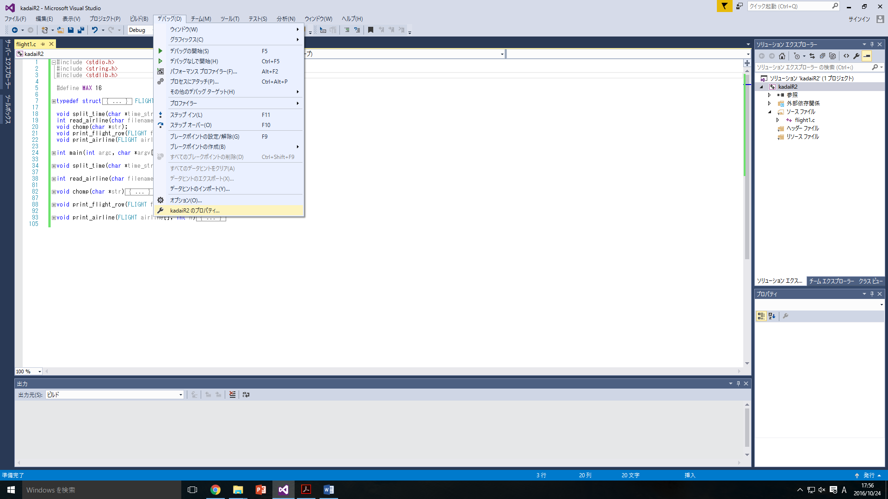
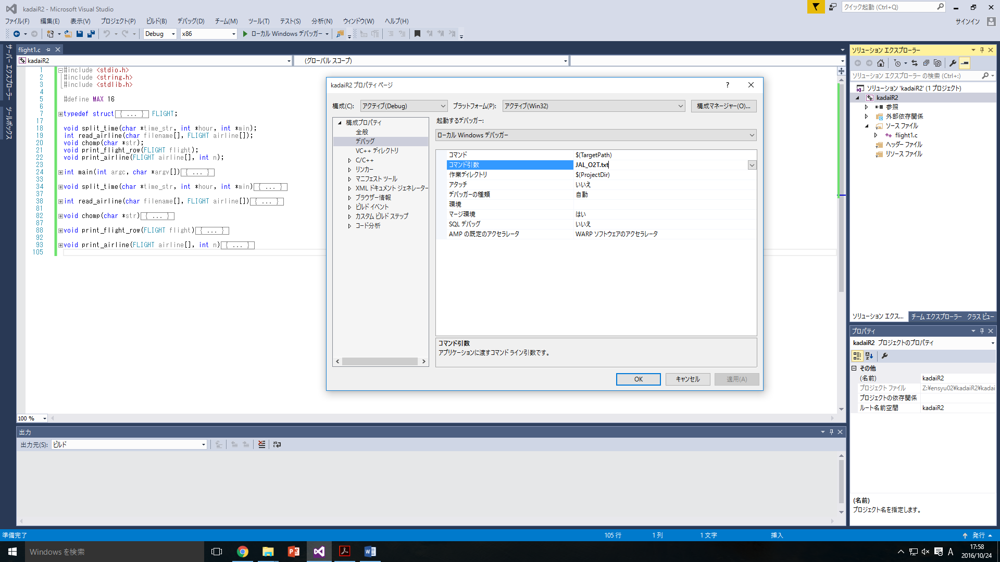

課題 R2 「フライトスケジュールの表示・検索」
課題の概要
この課題では，空港のフライトスケジュールの表示および検索を行うCプログラム flight.c を作成することを目的とする．
本課題では，岡山空港の岡山-羽田間のフライトスケジュールの一部を対象とし，データはテキストファイル(JAL_O2T.txt, JAL_T2O.txt, ANA_O2T.txt, ANA_T2O.txt)として与えられるものとする．
データ構造
プログラムでデータを扱うためには，まずデータ構造を決める必要がある．
フライトは，複数の出発および到着時刻の組から構成されるため，本課題ではフライトスケジュールを配列airlineとして表すことにする．
そして，配列airlineの要素となるフライト情報は，便名や出発および到着時刻など複数のデータを持つため，構造体を用いて定義する．
本演習では，配列airlineの要素となる構造体の型FLIGHTを以下のように定義する．
FLIGHT 型の構造体は以下の構造をもつ．
FLIGHT型の構造体は要素として，航空会社を表す文字列carrier，出発地を表す文字列from，到着地を表す文字列to，便名を表す整数num，出発時刻の時と分を表す整数d_hourとd_min，そして到着時刻の時と分を表す整数a_hourとa_min の8つをもつ．
そして，FLIGHT型の配列airlineは以下のように宣言する．
ここで，配列の要素数MAXは与えられたテキストファイルのデータを処理するのに十分でなければならないが，本演習ではMAX=16とする．
課題1 フライト一覧の表示機能の実装
まず，テキストファイルからフライトスケジュールを読み込み，以下に示すような形式で標準入出力に表示するプログラムを作成する．
フライトスケジュールのデータが格納されているテキストファイルの内容を以下に示す． 1行目には航空会社名，2行目と3行目には出発地と到着地が書かれており，4行目以降の各行には便名，出発時刻，そして到着時刻が書かれている． また，出発および到着時刻は「:」(半角コロン)で区切られた1～2桁の整数の組として書かれているものとする．
プログラムの実装
このプログラムの機能は，テキストファイルから航空路線のフライトスケジュールを読み込みFLIGHT型の配列airlineへと格納する関数read_airline()と，FLIGHT型の配列airlineに格納された航空路線のフライトスケジュールを標準入出力に表示する関数print_airline()の2つの関数によって実現する．
演習課題1
コロン「:」で区切られた1～2桁の整数の組である文字列time_strと整数hourとminへのポインタを引数として，コロンの前後の整数をそれぞれhourとminに格納する関数split_time()を作成せよ．
文字列からのデータ読み込み
sscanf 関数では，scanf 関数と同様にフォーマット指定子を用いて文字列からのデータ読み込みが可能である．
書式：
sscanf(文字列, フォーマット, 代入先変数1へのポインタ, 代入先変数2へのポインタ, ...)
例：
| プロトタイプ宣言 | |
|---|---|
split_time() 関数の呼び出し例を，サンプルコード kadaiR2-1.c に示している．
以下に main 関数を抜粋する．
このサンプルコードでは，split_time() 関数によって文字列 7:10 を : で分割して変数 hour と min に格納し，それぞれを2桁の整数として標準出力に表示している．
| kadaiR2-1.c から抜粋 | |
|---|---|
このプログラムをコンパイルし，実行すると，以下の結果が得られる．
演習課題2
航空路線のフライトデータが格納されたファイル名filenameとフライトスケジュールの格納先となるFLIGHT型の配列airlineを引数として，構造体にフライトスケジュールを格納し，フライト数を戻り値として返す関数read_airline()を作成せよ．
fgets関数でファイルから行単位で読み出すとき，得られた文字列は末尾に改行文字\nが含まれることに注意せよ．
| プロトタイプ宣言 | |
|---|---|
関数read_airline()内でファイルを開く際には，以下のようにfilenameで与えられたファイル名を引数としてfopenを実行し，「JAL_O2T.txt」などのファイル名を直接指定しない．
| ファイル処理を追加 | |
|---|---|
read_airline() 関数の呼び出し例を，サンプルコード kadaiR2-2.c に示している．
以下に main 関数を抜粋する．
このサンプルコードでは，read_airline() 関数によって引数として指定されたファイルを読み込み，FLIGHT 型の配列 airline に格納している．
このプログラムをコンパイルし，実行すると，以下の結果が得られる．
演習課題3
フライト情報のデータが格納されたFLIGHT型の構造体flightを引数として，フライト情報を標準入出力に表示する関数print_flight_row()を作成せよ．
| プロトタイプ宣言 | |
|---|---|
出力形式は，
- JAL232␣␣␣7:10␣␣␣8:20
- JAL234␣␣10:00␣␣11:15
のように，便名と出発時刻，到着時刻を半角スペース×2で区切ったものとする． 時刻の時，分の表示桁数はどちらも 2 桁とする．
print_flight_row() 関数の呼び出し例をサンプルコード kadaiR2-3.c に示している．
以下に main 関数を抜粋する．
このサンプルコードでは，for 文で airline の各要素を参照し，print_flight_row() 関数によって標準出力への表示を行っている．
なお，read_airline の戻り値として airline に格納されたフライト数を取得し，変数 n に格納している．
| kadaiR2-3.c から抜粋 | |
|---|---|
このプログラムをコンパイルし，実行すると，以下の結果が得られる．
演習課題4
航空路線のフライトスケジュールのデータが格納されたFLIGHT型の配列airlineおよびフライト数を表す整数nを引数として，航空路線のフライトスケジュールを標準入出力に表示する関数print_airline()を作成せよ．
| プロトタイプ宣言 | |
|---|---|
print_airline() 関数の呼び出し例をサンプルコード kadaiR2-4.c に示している．
以下に main 関数を抜粋する．
このサンプルコードでは，kadaiR2-3.c と同様にフライト情報を airline に格納した後，print_airline() 関数によってそれらを出力している．
| kadaiR2-4.c から抜粋 | |
|---|---|
このプログラムをコンパイルし，実行すると，以下の結果が得られる．
演習課題5
ここまでに作成した関数を用いて，フライトスケジュールの表示機能を完成させよ．
課題2 フライトの検索機能の実装
次に，テキストファイルからフライトスケジュールを読み込み，以下に示すように，時刻と表示数が入力されたとき，その時刻以降のフライトを早い順に指定された数だけ標準入出力に表示するプログラムを作成する．
ここで表示数は1〜10の間から選択するものとし，該当するフライトが入力された表示数より少ない場合は該当するもののみを表示すること．
該当するスケジュールが存在しないときは，その旨を表示する．
なお，時刻は時と分を表す1～2桁の整数を「:」(半角コロン)で繋げた形式で与えられるものとする．
プログラムの実装
この機能は，時刻からフライトを検索する関数search_flight()と，フライト情報を標準入出力に表示する関数print_flight()の2つの関数によって実現する．
演習課題6
フライトスケジュールが格納されたFLIGHT型の配列airline，フライトの個数を表す整数flight_num，時刻を表す整数hourとminを引数とし，その時刻よりも後でかつ最も早いフライトを配列airlineから探索し，その要素のインデックスを戻り値として返す関数search_flight()を作成せよ．
フライトが見つからなかった場合の戻り値は-1とする．
| プロトタイプ宣言 | |
|---|---|
search_flight() 関数の呼び出し例をサンプルコード kadaiR2-6.c に示している．
以下に main 関数を抜粋する．
このサンプルコードでは，search_flight() 関数により，時刻 10:30 以降で最も早いフライトを airline からを探索し，そのインデックスを戻り値として変数 i に格納している．
そして，print_airline() 関数によって airline[i] の内容を表示している．
| kadaiR2-6.c から抜粋 | |
|---|---|
このプログラムをコンパイルし，実行すると，以下の結果が得られる．
演習課題7
FLIGHT型の構造体を引数として，フライトの情報を標準入出力に表示する関数print_flight()を作成せよ．
| プロトタイプ宣言 | |
|---|---|
出力形式は，
- JAL236便␣岡山12:55発␣羽田14:10着
のように，便名，出発地と出発時刻，そして到着地と到着時刻を半角スペースで区切ったものとする．
print_flight() 関数の呼び出し例をサンプルコード kadaiR2-7.c に示している．
以下に main 関数を抜粋する．
このサンプルコードでは，kadaiR2-6.c と同様に，フライト情報を airline に格納し，10:30 以降で最も早いフライトを検索してそのインデックスを i に格納している．
その後，print_flight() 関数によってフライト情報を表示している．
| kadaiR2-7.c から抜粋 | |
|---|---|
このプログラムをコンパイルし，実行すると，以下の結果が得られる．
演習課題8
FLIGHT型の構造体，フライトの個数を表す整数flight_num，表示を開始するインデックスを表す整数i，表示数を表す整数print_numを引数として，指定された数だけフライトの情報を標準入出力に表示する関数print_some_flights()を作成せよ．
| プロトタイプ宣言 | |
|---|---|
print_some_flights() 関数の呼び出し例をサンプルコード kadaiR2-8.c に示している．
このサンプルコードでは，kadaiR2-6.c，kadaiR2-7.c と同様にフライト情報を airline に格納し，10:30 以降で最も早いフライトを検索してそのインデックスを i に格納している．
その後，print_some_flights() 関数で 3 つのフライト情報を表示している．
| kadaiR2-8.c から抜粋 | |
|---|---|
このプログラムをコンパイルし，実行すると，以下の結果が得られる．
演習課題9
これまでに作成した関数を用いて，フライトの検索機能を完成させよ．
演習課題10
以下に示すように，フライトスケジュールの表示機能と，フライトの検索機能を切り替えて実行できるようにせよ．
補足資料
課題R2では，コマンドライン引数を伴う実行や，外部ファイルからのデータの読み込みなど，これまでの演習ではあまり扱ってこなかった機能を利用してプログラムを作成する． ソフトウェア演習Iやプログラム言語IIなど，他の講義・演習で学習した内容と重複する部分もあると思われるが，補足としてコマンドラインインタフェースやファイル入出力について概説する．
コマンドラインインタフェース（CLI）
この演習で作成するプログラムは，コマンドラインで実行されることを前提としている．
コマンドラインというのは1行（ライン）の文字列として表される命令（コマンド）で，例えば Windows の場合，コマンドプロンプト（cmd.exe）で dirと入力すれば以下の図のようにファイルの一覧が表示される．
これは dir がファイルの一覧を表示するコマンドだからである．
同様に，作成したプログラムをコンパイルして実行する場合は，
- プログラムをコンパイルするコマンド（例えば
gcc -o sample sample.c） - プログラムを実行するコマンド（例えば
./sample）
をそれぞれ入力する必要がある． Visual Studio でプログラムを作成している場合は，こういった処理はVisual Studio 内でやってくれるので，あまり意識することはないかもしれない．
コマンドは，実行するときにコマンドライン引数をつけることができる（コマンドによっては必ずつけないといけない場合もある）．
例えば dir コマンドの場合，コマンド引数としてフォルダ名を併せて入力すると，そのフォルダ内のファイルの一覧が表示される．
コマンド引数を省略すると，今自分がいるフォルダ（カレントフォルダ）のファイルの一覧が表示される．
Visual Studio でプログラムを実行するときはコマンドラインを使わないので，引数をつけたい場合はデバッグオプションを使う必要がある．
デバッグオプションによる引数の指定
Visual Studio でコマンドライン引数を用いる場合は，メニューの「デバック(D)＞（プロジェクト名）のプロパティ」を開き，「構成プロパティ＞デバッグ＞コマンド引数」の欄に引数を入力すること．この課題の場合は，「JAL_O2T.txt」などのファイル名となる．
-
デバッグプロパティ
 -
コマンド引数の指定

パス
上述の dir の例で，コマンド引数としてフォルダ名を入力するとき，単純に目的のフォルダの名前だけを入力してもコンピュータ側に伝わらない場合がある．
例えば上記のようなフォルダ構成の場合，カレントフォルダが User1 のときコマンドラインに dir ABC と入力すると ABC フォルダの内容が表示されるが，dir DEF と入力してもフォルダの内容は表示されない．
DEF フォルダは ABC フォルダの中にあるので，dir ABC/DEF と入力する必要がある．
ABC/DEF のように，フォルダやファイルの位置を参照するための文字列をパス（path）という．
パスには相対パスと絶対パスがあり，相対パスはカレントフォルダを起点としたファイルやフォルダの位置を示すもの，絶対パスはカレントフォルダに依存せずにファイルやフォルダの位置を示すもの，という違いがある．
先ほどの ABC/DEF は，カレントフォルダを起点としたフォルダの場所を示すものなので，相対パスである．
Visual Studio のデバッグオプションでコマンド引数を指定する際に，ファイル名（例えば JAL_O2T.txt）のみ記入すると相対パスとして扱われるので，指定するファイルはプログラムの実行ファイルと同じフォルダに置いておかないといけない．
C 言語でのコマンド引数の扱い
C でコマンド引数をもつプログラムを作成する場合，以下のように main 関数に2つの引数 argc と argv を指定する．
コンパイルしたプログラムに引数をつけて実行すると，これらの変数には以下の値が格納される．
argc：引数の個数argv[0]：プログラムの実行ファイルのパスargv[1]：1 つめの引数の文字列のアドレスargv[2]：2 つめの引数の文字列のアドレスargv[3]：3 つめの...
以下のプログラムをコンパイルし，適当な引数をつけて実行してみよう．
ファイル入出力
C で外部のファイルからデータを読み込んだり（ファイル入力），ファイルにデータを書き込んだり（ファイル出力）する場合，ファイルポインタを使う必要がある．
ファイルポインタは FILE 型の構造体へのポインタという形で定義される．
FILE 型構造体の詳しい説明は（環境に依存する部分も大きいので）ここでは省略するが，以下の図のように対象となる外部ファイルのどの部分にアクセスしているか，という情報が含まれている．
宣言したファイルポインタを実際に扱うファイルと関連付けるためには fopen 関数を用いる．
fopen 関数の引数は filename と mode の２つで，戻り値は FILE 型構造体へのポインタ（ファイルポインタ）である．
fopen を実行すると，filename で指定された名前のファイルを mode で指定されたモードで開こうとし，うまく開ければそのファイルにアクセスするためのファイルポインタが，開けなければ NULL ポインタが戻り値として返ってくる．
ここでモードとは，ファイルをどのように扱うかを指定する文字列で，読み取り（"r"），書き込み（"w"），追加書き込み（"a"）などいろいろなものが指定できる．
この演習課題ではファイルの内容を参照するだけで更新しないので，読み取り（"r"）にしておけば問題はない．
ファイルとファイルポインタとの関連付けを解除するには fclose 関数を用いる．
ファイル入出力に関する関数をいくつか説明する．
これらの関数は #include <stdio.h> すれば利用できる．
1文字単位で入出力を行う場合は fgetc と fputc を用いる．
int fgetc (FILE *fp)int fputc (int c, FILE *fp)
fgetc の引数はファイルポインタ，戻り値はファイルから読み込んだ文字となる．
ファイルの最後か読み取りに失敗すると EOF を返す．
fputc の引数は書き込む文字とファイルポインタで，戻り値は書き込んだ文字となる．
書き込みに失敗すると EOF を返す．
1行単位で入出力を行う場合は fgets と fputs を用いる．
読み取りおよび書き込みは文字列に対して行う．
char *fgets (char *s, int n, FILE *fp)char *fputs (char *s, FILE *fp)
fgets の引数は読み取り先の文字列のアドレスと読み取る文字数の最大値，そしてファイルポインタで，ファイルの最後か読み取りに失敗すると戻り値として NULL を返す．
行の区切りは改行文字 \n で，改行文字を含めて読み取りを行う．
fgets で読み取った文字列には，終端文字 \0 が自動的に付け加えられる．
fputs の引数は書き込み元の文字列のアドレスとファイルポインタで，書き込みに失敗すると NULL を返す．
fputc で書き込む文字列には，終端文字 \0 が付いている必要がある（\0 はファイルには書き込まれない）．
scanf や printf のように書式付きで入出力を行う場合は fscanf と fprintf を用いる．
int fscanf (FILE *fp, char *format, …)int fprintf (FILE *fp, char *format, …)
fscanf の引数はファイルポインタとフォーマット指定子，そして読み取り先の変数で，戻り値は代入された変数の個数となる．
読み取りに失敗すると EOF を返す．
fprintf の引数はファイルポインタとフォーマット指定子，そして読み取り先の変数で，戻り値は参照された変数の個数となる．
読み取りに失敗すると EOF を返す．
いずれもファイルポインタ以降の引数は scanf および printf と同様である．